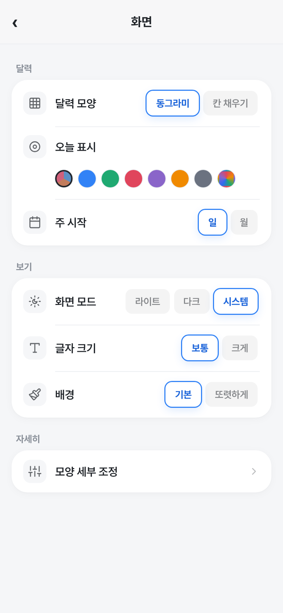
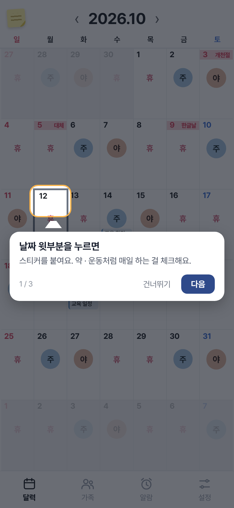
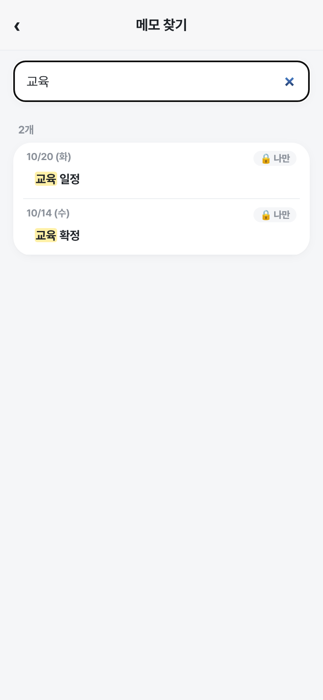
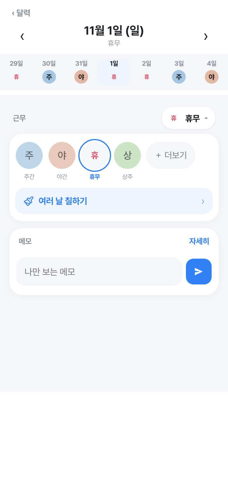

1
폰이 띄우는 확인 창

근무표·메모·알람·설정을 모두 지울까요?
지우면 되돌릴 수 없어요.
취소
확인
2
저절로 뜨는 창 (처음 안내 등)

3
찾기 결과에서 여는 날짜 창

4
다른 달로 넘어간 날짜 창

5
창 → 창으로 이어질 때
💊 비타민
스티커 떼기
이날부터 떼기
스티커 전부 떼기
이날부터 비타민을 뗄까요?
취소
떼기
→
6
위젯 눌러 뜨는 날짜 창 (폰 화면)
11월 17일 (화)
교육
7
설정 안쪽 페이지